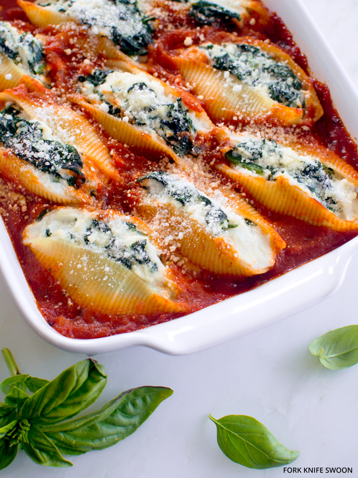

Spinach and Ricotta Stuffed Shells

Description
Italian Recipe for stuffed shells filled with ricotta and spinach and homemade pasta sauce
Ingredients
Filling
- 2 Cups (16 oz) good quality ricotta
- 12 oz (3/4 bag) frozen, chopped spinach (or two bunches of fresh spinach, washed and chopped
- 1 egg
- 1/2 tsp salt
- Freshly ground black pepper (to taste)
- OPTIONAL: 1/2 Cup (2 oz) shredded mozzarella cheese
Besciamella (White) Sauce
- 1/2 oz (1/8 stick) butter
- 1 oz (a little less than 1/4 cup) all purpose flour
- 12 oz (1 1/2 cups) warmed whole milk
- dash of nutmeg
- dash of white pepper
- 1/4 tsp salt to taste
Pasta
- 12 oz box of jumbo pasta shells (or cannelloni tubes)
- Salt to cook shells
Instructions
Filling
- Begin by steaming the spinach in a closed pot with a little water,
for about 5 minutes. Drain and cool,
then squeeze the remaining liquid from the
spinach and place in a large bowl.
Add the ricotta, egg, salt and pepper and mix well.
Besciamella (White) Sauce
- Melt the butter in a medium sized pan over medium heat,
then add the flour and stir well. Continue to cook while stirring
for about 3 to 4 minutes, but do not let it brown.
(Cooking the flour well is important because the sauce will
have a “raw-flour” taste if it isn’t cooked long enough.)
- Have the milk close by in a jug that is easy to pour from,
and add a little drop of milk.
The milk should sizzle and steam immediately, if it doesn’t,
turn up the heat a little. Once the milk does sizzle,
begin adding a little at a time, and stirring
quickly to keep the sauce smooth.
- The secret to not having lumps in white sauce is to gradually
increase the amount of milk you add each time;
if you add too much at once, especially early on,
chances are you will end up with
lumpy sauce (which is completely reparable with an immersion
blender)
- Start with about 2 tablespoons of milk, then 2 more,
then a little more each time. Once the sauce begins to form,
you can add more milk each time. Just make sure all the milk
has been absorbed after each addition, before adding more
- When the sauce is finished, add salt, nutmeg and white pepper to taste,
and remove from heat and keep a lid on the pot.
Pasta
- Cook the pasta shells
- Once done cooking, drain shells but keep 2 cups of pasta water
Assembley
Put a little sauce in the bottom of a large, rectangular baking tray. Now you are ready to fill the shells. Using a spoon, hold a shell and fill it with some of the ricotta and spinach filling
Place the shell in the tray and continue with the rest of the shells and filling until they are all used. You may need another smaller dish if they don't all fit in the large tray. At this point, preheat the oven to 375°F (190°C).
Heat the besciamella sauce, if it has become too stiff, then gradually pour over the tray(s) of stuffed shells. Don't flood the tray with white sauce. Add some of the pasta water to some of the pasta sauce in a bowl. Now, spoon the pasta sauce over the shells, but again, don't overload them.
Finally, pour about a cup or so of the reserved pasta water in between the shells, so that they will continue to cook in the oven.
Sprinkle with some freshly grated Parmigiano Reggiano, or Pecorino Romano cheese, then cover the tray with aluminum foil (If the foil touches the sauce, put a layer of parchment first so that the tomato sauce doesn't "eat" the foil.)
Put into the preheated oven for about 25 minutes, then remove the foil and check to make sure that the shells aren't too dry (add more pasta water if it looks this way). Continue to bake for another 10 minutes or so, uncovered, then remove from the oven and replace the parchment and foil for about 10 minutes so that the shells absorb more of the liquid. This will also help them to hold together, when being cut.